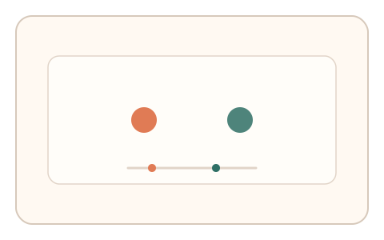
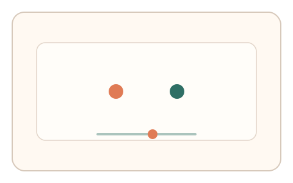
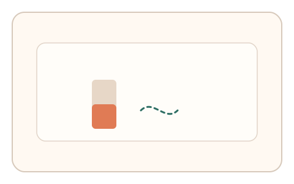

#127
D：单底座 × 单信号 × 自适应/短序列（视觉时域）
已扩展
顺序判别临界值
调节两刺激间隔到刚能判断先后，记录顺序判别阈值与微调次数。
概念原文
两刺激间隔可调，用户调到“刚能判断先后”的临界值，系统记录阈值与微调次数并与群体基线对比。
把时间顺序 JND 作为核心信号。
研究背景
时间顺序判别任务可估计 JND，阈值与微调模式具有稳定区间，适合形成单信号验证。
核心机制
- 呈现两个时间相近的刺激。
- 用户调节间隔到“刚能判断先后”。
- 记录 JND 阈值与调整次数。
- 与群体基线或历史分布比对。
用户流程
- 步骤 1：用户看到两刺激依次出现。
- 步骤 2：调节间隔直到刚能分辨顺序。
- 步骤 3：系统记录阈值并判定。
判定信号
时间顺序 JND 阈值
阈值落在稳定范围且难以精确伪造。
微调次数与反应时
真实用户需要多次试探。
判定逻辑
阈值与微调特征需符合人类分布；过低阈值或无试探判异常。
对抗面
- 脚本选择固定阈值
- 重放用户的调整轨迹
防御与缓解
- 随机化刺激位置/强度与顺序
- 加入零间隔/长间隔捕捉试次
- 限制可见时窗减少脚本读取
可达性与风险
提供更大间隔范围与视觉/听觉替代版本。
- 设备计时精度影响阈值
- 视觉敏感用户不适
可视化状态

状态 1：顺序呈现
两刺激按顺序出现。

状态 2：间隔调节
拖动滑杆调整时间间隔。

状态 3：阈值判定
记录阈值与微调次数。
参考资料
Temporal order judgment
说明顺序判别任务与阈值。
Just-noticeable difference
说明可觉差阈值。